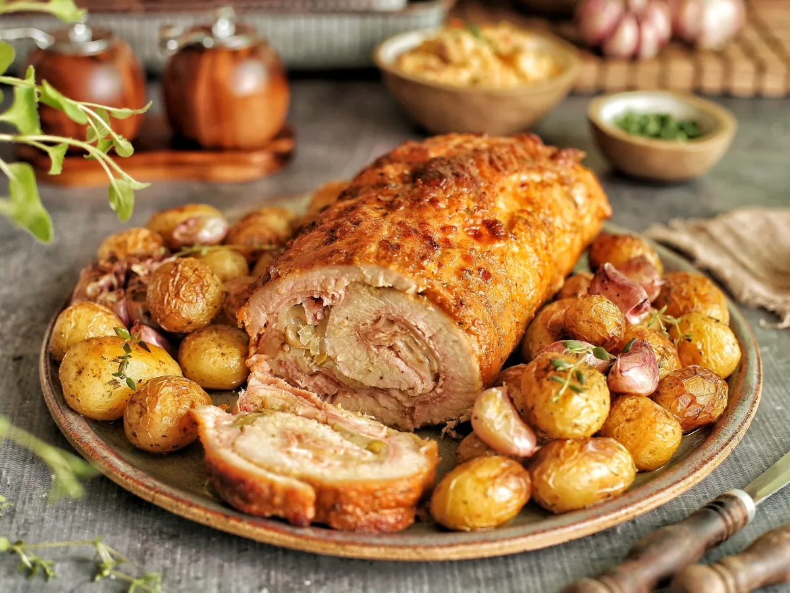

O lombo recheado faz a festa no forno, dá um show no centro da mesa e merece aplausos no sabor. A marinada com cerveja e limão ajuda a amaciar a carne. No recheio: presunto, queijo, azeitonas e bastante cebola!
Ingredientes da Marinada
- 1 lata de cerveja branca tipo pilsen (350 ml)
- 4 colheres de sopa de manteiga (80 gramas)
- 1 envelope de creme de cebola (70 gramas)
- 4 dentes de alho
- Suco de 2 limões
- 2 colheres de sopa de azeite (30 ml)
- 1 colher de chá de sal (ou a gosto)
- 1 colher de chá de pimenta-do-reino (ou a gosto)
- 1 colher de chá de páprica doce ou defumada (ou a gosto)
- 1 colher de chá de orégano seco (ou a gosto)
- 1 colher de chá de pimenta calabresa (ou a gosto)
- Cheiro-verde a gosto
Ingredientes do Lombo
- 1 lombo de porco (cerca de 2 kg)
- 300 gramas de presunto fatiado
- 300 gramas de mussarela fatiada
- 150 gramas de bacon
- 150 gramas de azeitona
- 1 cebola média
- Orégano a gosto
- Azeite a gosto
Modo de preparo:
1- Arrume sua bancada e os ingredientes! Corte a cebola do lombo em rodelas, as azeitonas e o bacon em fatias;
2-Para a marinada, coloque no liquidificador o cheiro-verde, os alhos, o suco dos limões, o azeite, sal, as pimentas, a páprica, o orégano, o creme de cebola, a manteiga e a cerveja. Bata por cerca de 2 minutos, ou até obter uma mistura homogênea;
3-Com uma faca afiada, abra o lombo, formando uma manta grande e uniforme. Faça pequenos furos por toda a superfície da carne, facilitando que a marinada penetre melhor;
4-Coloque o lombo aberto em uma travessa e despeje a marinada por cima. Espalhe bem por toda a carne, inclusive nos furos. Cubra a travessa com uma tampa ou plástico-filme e leve à geladeira de 8 a 12 horas;
5-No dia seguinte, retire o lombo da marinada e coloque-o, com a capa de gordura virada para baixo, em uma assadeira. Faça camadas com o presunto, mussarela, o bacon, as azeitonas e a cebola. Regue com azeite e salpique orégano;
6-Enrole o lombo com firmeza, como um rocambole. Se necessário, amarre com um barbante culinário para manter o formato;
7-Forre a assadeira com papel-alumínio, coloque o lombo sobre ele, regue com um pouco da marinada e embrulhe bem. Leve para assar em forno preaquecido a 180 ºC;
8-A cada 20 minutos, abra cuidadosamente o papel-alumínio, regue a carne com mais um pouco da marinada, feche novamente e continue assando. Após completar 1 hora, retire o alumínio e deixe o lombo dourar por mais 30 minutos;
9-Retire do forno e aguarde de 10 a 15 minutos antes de fatiar. Assim, a carne permanece mais suculenta e macia.